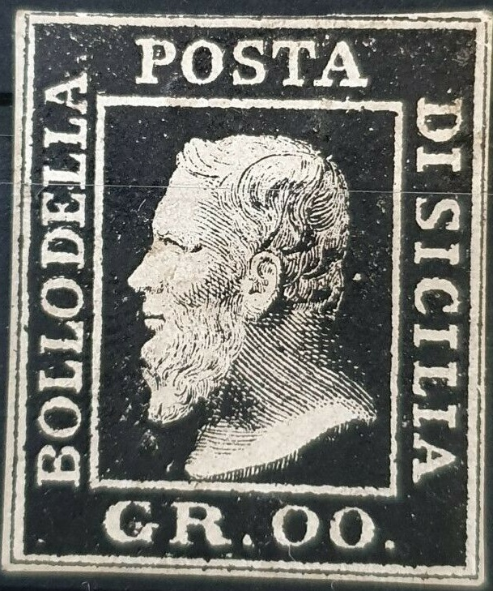
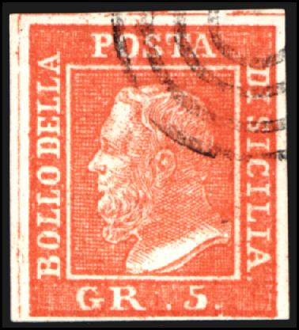
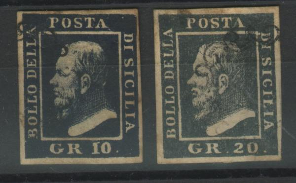
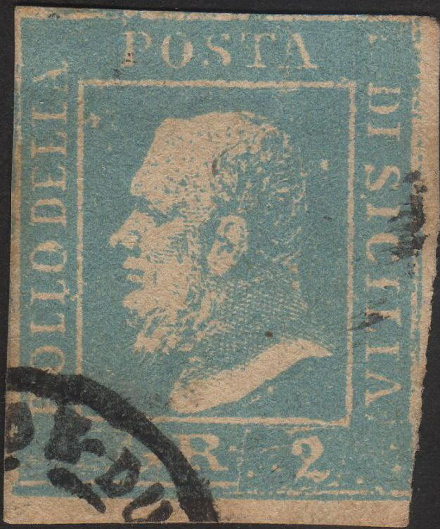
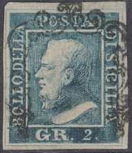

A forgery with inscription "GR.00." in the colour green and another one in brown with blue cancel. Sometimes these sare said to be proofs.
Return To Catalogue - Sicily forgeries, part 2 - Sicily forgeries, part 3 - Sicily - Italy
Note: on my website many of the
pictures can not be seen! They are of course present in the
catalogue;
contact me if you want to purchase the catalogue.
Album Weeds distinguishes already seven different kinds of forgeries (in the early 19th century). Forgeries made by Spiro were already described in 'The Stamp Collector's Magazine' in 1864 (1st October, page 156). Examples of forgeries:

A forgery with inscription "GR.00." in the colour green
and another one in brown with blue cancel. Sometimes these sare
said to be proofs.
Note that the value is not attached in these forgeries. Futhermore the "R" of "GR" has a very long 'tail'. Note also the strange cancel ("PD" in a half of an ellipse?). This forgery is rather common, but I've seen many of them being sold as genuine. Mostly these forgeries are cancelled with the very particular cancel shown above (roughly half a circle with some blotches inside), though I have seen uncancelled forgeries. This forgery is the first one to be described in Album Weeds.


Forgeries of Tuscany and one of Costa Rica with the same bogus
cancel, likely made by the same forger.
Spiro forgeries:



(Spiro forgeries?)
(Forgeries, reduced sizes)
Spiro has made forgeries of the Sicily stamps. I think the above stamps are Spiro forgeries (by the way, they look quite similar to the first forgeries, could they be the same?). I have seen a whole sheet (5x5) of the 1 gr Spiro forgeries.



(There is no "." behind "SICILIA")
I think the above forgeries are the second ones described in Album Weeds. There is no dot behind "SICILIA" and the nose is 'hollow'.
This is the third forgery described in Album Weeds. The background behind the head is solid, instead of composed of lines. The "." behind "SICILIA" is slightly too low, level with the horizontal white line below the head. The "B" of "BOLLO" is also placed too low. The nose is quite peculiar and the crossbar of the "A" of "POSTA" is too low. According to Album Weeds it has a similar postmark as the genuine stamps.


The design is very primitive, the cancels consist of dots or lines. There is no dot behind the "A" of "SICILIA" and the crossbar of this letter has almost disappeared. There are very thin guidelines between the stamps. The colours are not always like the genuine stamps, for example the 20 g is violet instead of blue.
 


The same forgery type, but now with a numeral "-94-"
cancel with dots, a "4 1/2" cancel, a "3383"
cancel and a two ring cancel. Also some uncancelled versions of
these forgeries.


(Oneglia forgeries, The "GR.5" is too far to the left
in the above forgeries)
Erasmus Oneglia made forgeries of the stamps of Sicily. He offers them in an advertisement in 1895 for 3 Sh (all 7 values, see 'Philatelic forgers, their lives and works' by V.E. Tyler). The forgeries shown above are such Oneglia forgeries. Note that the "S" of "POSTA" is different from the genuine stamps in the above forgeries. These forgeries are also often referred to as Panelli forgeries (probably Panelli sold these forgeries as well).
Other stamps, that I do not quite trust (probably made by the same forger?):




Note that there is an outline around the whole stamp in the above stamps.

(I've been told that this forgery was also made by Oneglia,
though the design and cancel are different from the above
forgeries)


I've also seen blocks of four of these forgeries. These forgeries are often offered together with this forgery of Tuscany:

Some very deceptive forgeries were made by Sperati. Sperati forgeries obey all the distinghuishing characteristics of the genuine stamps. Some 'dieproofs' in the color of the stamp or in black exist with a single stamp and with or without the text 'REPRODUCTION INTERDITE' in violet with the signature of Jean de Sperati at the bottom.

Sperati forgery of the 1/2 b value (Reproduction A,
distinguishing characteristics see below). A Reproduction B also
exists (sorry, no image available yet).
Distinguishing characteristics of the 1/2 b Sperati forgery
Reproduction A: a small dot in the bottom of the "R"
and a white spot above the "2" in the inner rectangular
area.

Sperati forgery of the 5 gr stamp. Reproductions A,B and C are
all based on genuine sheet position 87. They all have a smudge in
the white line below the buste of the King above the
"R" of "GR". A black die proof exists of this
forgery. I haven't seen Reproduction D. It is based on genuine
sheet position 70, it has a colored line to the left of
"LL" of "BOLLO" in the inner white frame
line.

Sperati forgery of the 10 gr value. It also exists with cancel.
This forgery is based on position 16 of the genuine sheet. In the
white line, just under the bust of the King, a large blue spot of
color can be found. I've seen a black die proof of this forgery
as well as a blue die proof.

This Sperati forgery of the 20 gr value is based on the 10th
position of the genuine sheet. The top part of this forgery is
considerably smudged. I've seen a black die proof of this forgery
as well as a blue die proof.

Reproductions A and B of Sperati were both made based on the
genuine stamp on position 12 of the sheet. Both reproductions
have the same distinguishing characteristics except that
Reproduction B has an additional smudged area in the upper left
corner (see image above). For both reproductions, there is a tiny
white line connecting the bust of the King to the white frameline
below it.

Sperati's reproduction 'C' of the 50 gr stamp. It is based on
position 49 of the genuine sheet. The 'A' of 'SICILIA' has a
missing cross bar. There is a brown smudge in the '5'. I've seen
a 'proof' in brown color as well as in black color.

Forged Sperati cancels.
Sicily forgeries, part 2
Sicily forgeries, part 3
Stamps - Francobolli - Timbres-Poste - Briefmarken


{kind=link}
{kind=link}
{kind=link}
{kind=link}
{kind=link}
{kind=link}
{kind=link}